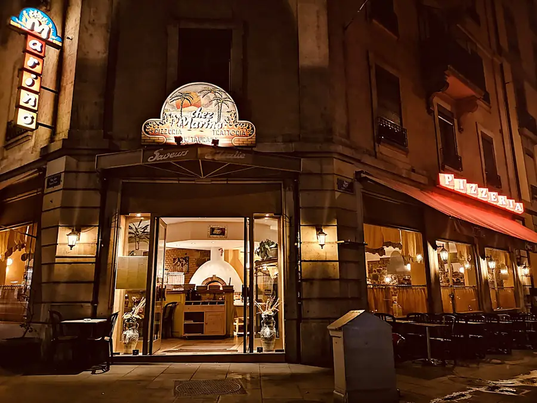
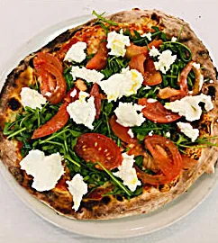
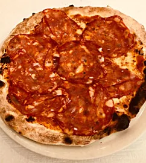
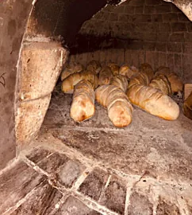
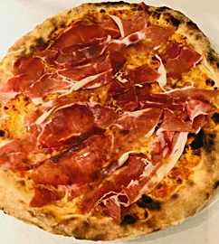
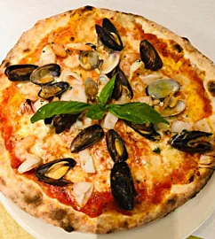
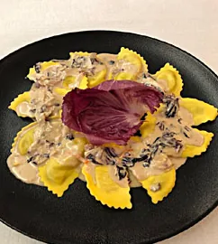
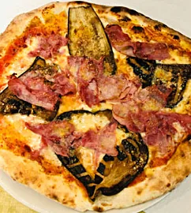
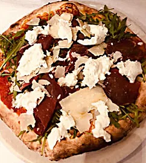
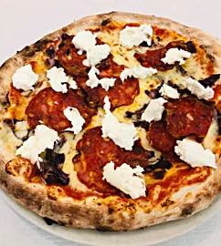

Chez Marino
Toutes les saveurs de l’Italie, au 22, rue Muzy à Genève.
Un restaurant chaleureux et amical, dont l’esprit rappelle un air de famille. Un hommage au père fondateur, Marino, originaire des Pouilles, qui a été un modèle et une muse.
C’est avec bonne humeur, simplicité et humilité que Veronica, Giuseppe et la squadra vous accueillent.
Sortis du four
Quelques assiettes de la maison. Le pain aussi sort du four : il est élaboré par nos pizzaioli.









Rue Muzy 22
Chez Marino22, rue Muzy
1207 Genève Ouvrir l’itinéraire dans Google Maps 022 736 45 16
Pour réserver une table, appelez-nous.
Horaires
- Lun11h30
14h3018h30
1h - Mar11h30
14h3018h30
1h - Mer11h30
14h3018h30
1h - Jeu11h30
14h3018h30
1h - Ven11h30
14h3018h30
2h - Sam11h30
14h3018h30
2h - Dim11h30
14h3018h30
1h
La carte
Toute la carte, lisible sur téléphone. Prix en francs suisses, TVA 8.1 % incluse. Les lettres après chaque plat indiquent les allergènes (légende en bas).
Pour commencer
Le plat qui porte le nom de Marino, et ceux des grand-mères.
- Antipasto MarinoP-M-C-Suentrée 20.–
plat 27.–Fines tranches de veau nappées de sauce au thon, fines tranches de bœuf cru, salade de calamars et champignons - Ravioli della nonnaG-L25.–Ravioli farcis aux épinards et ricotta servis au beurre et à la sauge
- Tortellini « Grand-Mère »G-L-C25.–Tortellini à la viande avec crème, petits pois et jambon
La carte complète
Pizzepizzas
- FocacciaG9.–
- MargheritaG-L16.–Sauce tomate, mozzarella, origan
- TricoloreG-L24.–Sauce tomate, mozzarella, tomates fraîches, roquette, mozzarella di bufala
- Quattro formaggiG-L23.–Sauce tomate, mozzarella, gorgonzola, ricotta, parmesan
- ProsciuttoG-L19.–Sauce tomate, mozzarella, jambon cuit
- FunghiG-L18.–Sauce tomate, mozzarella, champignons
- CampagnolaG-L21.–Sauce tomate, mozzarella, oignons, ail, tomates fraîches, basilic
- Prosciutto e funghiG-L21.–Sauce tomate, mozzarella, jambon cuit, champignons
- CapricciosaG-L-O22.–Sauce tomate, mozzarella, jambon cuit, champignons, œuf
- Quattro stagioniG-L23.–Sauce tomate, mozzarella, jambon cuit, champignons, artichauts, olives
- ParmigianaG-L24.–Sauce tomate, mozzarella, jambon cuit, aubergines grillées, parmesan
- CalzoneG-L22.–Sauce tomate, mozzarella, jambon cuit, artichauts
- ParmaG-L25.–Sauce tomate, mozzarella, jambon de Parme
- ItaliaG-L29.–Sauce tomate, mozzarella, jambon de Parme, mozzarella di bufala, roquette, parmesan
- CalabreseG-L24.–Sauce tomate, mozzarella, salami piquant
- BufalottaG-L29.–Sauce tomate, mozzarella, salami piquant, salade de trévise et mozzarella di bufala
- AlpinaG-L25.–Tomates cerises, mozzarella, roquette, fromage de chèvre et miel
- PaesanaG-L26.–Sauce tomate, mozzarella, salami piquant, ricotta, aubergines grillées
- TirrenicaG-L29.–Sauce tomate, mozzarella, bresaola, roquette, mozzarella di bufala, parmesan, huile aromatisée à la truffe
- PrimaveraG-L23.–Sauce tomate, mozzarella, courgettes, aubergines grillées et poivrons
- NapoletanaG-L-P20.–Sauce tomate, mozzarella, anchois, olives, câpres
- SicilianaG-L-P22.–Sauce tomate, mozzarella, thon, olives, champignons
- ScozzeseG-L-P28.–Mozzarella, saumon fumé, ricotta et ciboulette
- Frutti di mareG-L-Cr-M25.–Sauce tomate, mozzarella, fruits de mer, ail
Le jambon cuit est un jambon d’épaule.
Antipastientrées
- TricoloreLentrée 17.–
plat 23.–Mozzarella di bufala, tomates et roquette - Antipasto MarinoP-M-C-Suentrée 20.–
plat 27.–Fines tranches de veau nappées de sauce au thon, fines tranches de bœuf cru, salade de calamars et champignons - Carpaccio de bœufLentrée 18.–
plat 27.–Fines tranches de bœuf cru garnies de copeaux de parmesan, roquette et champignons - Vitello tonnatoPentrée 19.–
plat 27.–Fines tranches de veau nappées de sauce au thon - Calamari in salsa piccanteM-Su22.–Calamars servis avec une sauce au vin blanc, tomate et piment
- Fantasia di mareM-P-Crentrée 19.–
plat 28.–Salade de fruits de mer - Gamberi aglio, olio e pepeCr27.–Gambas servis avec ail, huile et piment
Insalatesalades
- Insalata verde7.–Salade verte
- Insalata mista9.–Salade mêlée
- Insalata di rucola e parmigianoL12.–Salade de roquette avec copeaux de parmesan
- Insalata delle AlpiL-G23.–Salade de chèvre chaud servie avec des fines tranches de jambon de Parme et croûtons
- Insalata nizzardaO-P24.–Salade mêlée servie avec pommes de terre, œufs, thon, anchois
- Insalata mediterraneaL25.–Aubergines, courgettes et poivrons grillés avec de la mozzarella de bufala servis sur un lit de roquette et salade verte
Pasta e risottipâtes et risotto
- Rigatoni alla giancaleoneG-L-Su24.–Sauce tomate, crème, lardons et scamorza fumée
- Penne alla carbonaraG-L-O23.–Sauce crème, lardons et jaune d’œuf
- Penne all’arrabbiataG21.–Sauce tomate, piment et olives
- Penne gamberi e zucchineG-Cr-Su28.–Tomates fraîches, gambas et julienne de courgettes
- Penne alla carrettieraG-L26.–Sauce tomate, aubergines, courgettes et mozzarelle gratinée
- Penne alla sicilianaG-L25.–Sauce tomate, aubergines et mozzarella gratinée
- Penne ai gamberiG-L-Cr-Su26.–Sauce tomate, crème et gambas
- Fettucine alla bologneseG-C23.–Sauce tomate et viande hachée
- Fettucine al salmoneG-L-P-Su28.–Sauce tomate, crème et saumon fumé
- Linguine alle vongoleG-Su-M29.–Vongole, ail et persil
- Linguine allo scoglioG-Su-M-Cr30.–Tomates fraîches et fruits de mer
- Spaghetti aglio, olio e peperoncinoG20.–Ail, huile et piment
- Spaghetti mafiosoG-L-P24.–Anchois, olives, ail, piment, poivrons, pecorino et citron râpés
- Spaghetti al pomodoroG20.–Sauce tomate et basilic
- Spaghetti al pestoG-FC24.–Sauce au basilic
- Tagliatelle alla ciociaraG-L25.–Sauce tomate, crème, petits pois, jambon et champignons
- Gnocchi al gorgonzolaG-L24.–Sauce crème et gorgonzola
- Gnocchi auroraG-L24.–Sauce crème tomate
- LasagneG-L-C25.–Lasagne à la viande hachée de bœuf
- FagottiniG-L28.–Fagottini farcis à la ricotta et truffe blanche
- Tortellini « Grand-Mère »G-L-C25.–Tortellini à la viande avec crème, petits pois et jambon
- Ravioli della nonnaG-L25.–Ravioli farcis aux épinards et ricotta servis au beurre et à la sauge
- Risotto ai frutti di mareCr-M-Su-C-L32.–Risotto aux fruits de mer
Spaghetti et penne sans gluten sur demande.
Carneviandes
- Entrecôte alla griglia40.–Entrecôte grillée
- Entrecôte al pepeL-Su43.–Entrecôte au poivre concassé
- Finissima impanataO-G42.–Escalope de veau panée
- Scaloppine al limoneL-Su-G42.–Escalopes de veau servies avec une sauce au citron
- Tagliata di manzo con rucola e parmigianoL42.–Tranches de faux-filet de bœuf sur un lit de roquette et copeaux de parmesan
- Piccata milaneseO-G-L42.–Escalopes de veau panées à l’œuf et au parmesan
- Tartara di manzo42.–Tartare de bœuf
Servies avec une garniture au choix comprise : pâtes, riz, légumes ou frites.
Pescepoissons
- Calamari ai ferriM30.–Calamars grillés
- Calamari frittiM30.–Calamars frits
- Polpo ai ferriM30.–Poulpe grillé servi avec des pommes de terre écrasées
- Branzino in umido con pomodoriniP-Su33.–Filet de loup servi avec câpres, olives et tomates fraîches
- Salmone alla grigliaP28.–Saumon grillé
- Cozze alla diavolaM-Su24.–Moules servies avec une sauce au vin blanc, tomate et piment
- Cozze alla marinaraM-Su24.–Moules marinières
Servis avec une garniture au choix comprise : pâtes, riz, légumes ou frites.
Dolcidesserts
- Panna cottaL9.–
- Mousse ai lamponiL10.–Mousse aux framboises
- TiramisùL-G-O10.–
- Ananas10.–
- Pezzo di tortaG9.–Part de gâteau
- Affogato al caffèL10.–2 boules de glace vanille servies avec du café espresso
- Colonnello13.–2 boules de sorbet au citron servies avec vodka
- Pallina di gelato4.50Boule de glace
- ZabaglioneSu-O13.–Sucre, marsala, vin blanc, œuf
Vinivins en bouteille, 75 cl
- Suisse
- Œil-de-Perdrix AOC45.–Neuchâtel, rosé
- Côtes de Russin AOC49.–Genève, rouge
- Italie
- Pinot Grigio DOC45.–Friuli, blanc
- Corvina IGT45.–Veneto, rouge
- Palazzo della Torre IGT, Allegrini55.–Veneto, rouge
- Amarone De’Roari DOC, Righetti90.–Veneto, rouge
- Primitivo IGP Bio49.–Puglia, rouge
- Montepulciano DOC42.–Abruzzo, rouge
- La Segreta IGT49.–Sicilia, rouge
- Rigoleto Montecucco DOC, ColleMassari49.–Toscana, rouge
- ColleMassari Riserva Montecucco DOC55.–Toscana, rouge
- Chianti DOC45.–Toscana, rouge
- Brunello di Montalcino DOCG90.–Toscana, rouge
- Tignanello IGT, Antinori190.–Toscana, rouge
- France
- Côtes de Provence AOC45.–Provence, rosé
- Mousseux et champagne
- Prosecco50.–
- Mumm Cordon Rouge90.–
Vins ouverts dès 5.– le décilitre, pots de 5 dl à 25.–.
Allergènes
- G
- gluten
- L
- lactose
- O
- œufs
- P
- poisson
- M
- mollusques
- Cr
- crustacés
- C
- céleri
- FC
- fruits à coque
- Mou
- moutarde
- Su
- anhydride sulfureux et sulfites
En cas d’allergie ou d’intolérance, adressez-vous à notre personnel.
Provenance
Veau et bœuf : Suisse.
Filet de loup : Turquie (élevage).
Saumon : Norvège (élevage).
Saumon fumé : Norvège (FAO 27).
Pain : Suisse, élaboré par nos pizzaioli.
À savoir
Spaghetti et penne sans gluten sur demande.
Le jambon cuit est un jambon d’épaule.
Boissons et vins au verre : carte complète (PDF), English menu (PDF)